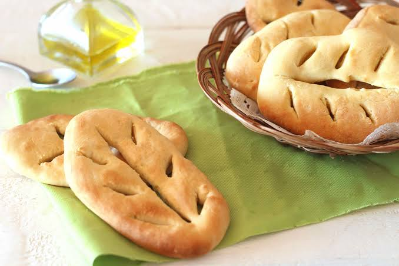

Fougasse sucrée
à la fleur d'oranger


⟹ Douceurs & Spécialités Sucrées ⟸
Une très ancienne famille de pains du foyer. Le mot « fougasse » plonge ses racines dans le latin populaire focacia, lui-même dérivé de focus, le foyer, le feu. Il désignait à l’origine un pain cuit près des braises ou sous la cendre. L’ancien occitan fogatza, devenu fogaça, a donné le français « fougasse » ; la même famille linguistique se retrouve dans la focaccia italienne, la fouace et d’autres pains européens. Cette étymologie rappelle que la fougasse est d’abord un produit de boulangerie profondément lié au four et aux cultures céréalières du Midi.
Du pain quotidien au pain de fête. La fougasse a pris au fil des siècles de très nombreuses formes. Salée, elle peut être enrichie d’huile d’olive, d’olives, d’oignons, d’anchois ou de grattons. Sucrée, elle se rapproche d’une pâte levée de fête, parfois briochée. Il n’existe donc pas une fougasse méridionale unique, mais une famille de pains façonnés différemment selon les villes, les métiers et les habitudes familiales.

Une forme immédiatement reconnaissable. Avant l’enfournement, la pâte est aplatie puis entaillée. Les ouvertures sont écartées pour qu’elles ne se referment pas pendant la pousse et la cuisson. Elles évoquent selon les interprétations une feuille, un épi ou une branche. Ce façonnage augmente la surface exposée à la chaleur, donne des bords plus dorés et permet de rompre facilement le pain pour le partager.
La fleur d’oranger, parfum du monde méditerranéen. L’eau de fleur d’oranger est obtenue par distillation des fleurs de l’oranger amer ou bigaradier. Son usage culinaire s’est diffusé autour de la Méditerranée par les échanges avec le monde arabo-andalou et oriental. Elle parfume depuis longtemps pâtisseries, brioches, navettes, fouaces, crêpes et entremets du Midi. Dans une pâte levée, son parfum floral s’accorde particulièrement bien avec l’huile d’olive, le beurre, le sucre et les zestes d’agrumes.
Une parenté avec plusieurs spécialités du Sud. La fougasse sucrée à la fleur d’oranger possède des cousines célèbres : la fougasse d’Aigues-Mortes dans le Gard, traditionnellement préparée à Noël, la fougassette de Grasse, ou encore la pompe à l’huile provençale. Les recettes ne sont pas identiques : certaines utilisent principalement l’huile d’olive, d’autres du beurre ou des œufs ; certaines sont fines et sucrées en surface, d’autres plus proches d’un pain brioché. Elles appartiennent néanmoins à un même univers de pâtes levées festives et parfumées.
À propos des « treize desserts ». La tradition des treize desserts est avant tout provençale. Les sources consacrées au patrimoine occitan et provençal associent notamment la pompe à l’huile, parfois appelée fougasse ou gibassier selon les lieux, au repas calendal. La fixation du nombre treize est relativement récente : les desserts de Noël sont anciens, mais la liste canonique des « treize » ne s’impose qu’au début du XXᵉ siècle. Il est donc plus juste, pour l’Aude et le Languedoc, de parler d’une parenté avec les traditions calendales du Midi que de présenter les treize desserts comme une coutume uniformément audoise.
Rompre plutôt que couper. Dans la tradition provençale attachée à la pompe à l’huile, le gâteau doit être rompu à la main et non tranché au couteau. Le geste est interprété comme un symbole de partage et parfois rapproché du pain rompu lors de la Cène. Cette coutume n’est pas attestée partout de la même manière pour toutes les fougasses languedociennes, mais elle illustre la forte dimension collective de ces pains de fête.
Le four du boulanger au cœur de la vie villageoise. Les pâtes levées demandaient autrefois du temps, un levain actif et un four bien maîtrisé. Dans de nombreux villages, le four domestique ou le four du boulanger structurait la cuisson du pain et des préparations festives. Certaines traditions méridionales montrent des familles apportant au boulanger leurs ingrédients ou leur pâte afin de profiter du four. La fougasse appartient ainsi à une culture où le savoir-faire professionnel du boulanger et les recettes familiales se rencontrent.
Une pâtisserie de fête faite d’ingrédients simples. Farine, levure ou levain, sucre, matière grasse et parfum : la base est modeste, mais la réussite dépend de la fermentation. Le pétrissage développe le réseau de gluten ; le repos permet aux levures de produire le gaz qui allège la mie ; l’apprêt après façonnage donne le volume final. Une cuisson assez vive fixe la structure tout en conservant le moelleux. Le sucre ajouté en surface peut former une croûte légèrement croustillante qui contraste avec la mie.
Une tradition plus large que l’Aude seule. La fougasse à la fleur d’oranger appartient à un vaste patrimoine culinaire occitan et méditerranéen. Dans l’Aude, elle peut être comprise comme l’une des expressions locales de cette famille de pains sucrés, aux côtés d’autres spécialités régionales à pâte levée et parfumée. Les sources disponibles ne permettent pas de fixer une date de naissance proprement audoise ni un lieu d’invention unique : sa profondeur historique vient justement de la circulation ancienne des techniques de boulangerie, des parfums et des usages festifs dans tout le Midi.
De Noël à toute l’année. Comme beaucoup de pâtisseries autrefois réservées aux fêtes religieuses ou familiales, les fougasses sucrées ont progressivement quitté le seul calendrier festif. L’amélioration des approvisionnements, la professionnalisation de la boulangerie et le développement du tourisme gastronomique ont permis d’en proposer plus régulièrement. Leur parfum de fleur d’oranger reste cependant fortement évocateur des fêtes, des brioches et des desserts familiaux du Sud.
Fougasse aux fruits confits : enrichie de dés d'écorces d'orange ou de fruits confits dans la pâte
Fougasse au sucre perlé : la version la plus simple, saupoudrée uniquement de sucre en grains
Fougasse à la crème : une variante plus riche où l'huile d'olive est remplacée par de la crème fraîche
La fougasse sucrée à la fleur d'oranger se déguste avant tout au moment des fêtes de fin d'année, mais certains boulangers de l'Aude la proposent toute l'année.
Boulangeries traditionnelles de l'Aude qui perpétuent la recette, notamment à l'approche de Noël.
Marchés de Noël du Languedoc, où elle se vend en parts à emporter.
Repas de réveillon, où elle figure encore parmi les treize desserts traditionnels du Sud.